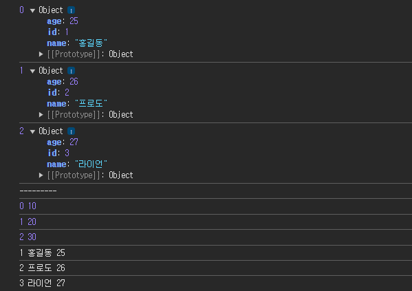

- Javascript에서 기능이 더 추가된 언어이다.
- ES6는 아래의 새로운 기능들을 포함한다.
- const and let
const는var보다 강력하고 일단 사용되면 변수를 다시 할당할 수 없다.- 이 기능은 선택자를 대상으로 하는 데 매우 유용하다.
var MyBtn = document.getElementById('mybtn'); // ES6 const MyBtn = document.getElementById('mybtn'); - Arrow functions(화살표 함수)
- Template Literals(템플릿 리터럴)
- Default parameters(기본 매개 변수)G
- Array and object destructing(배열 및 객체 비구조화)
- Import and export(가져오기 및 내보내기)
- Promises(프로미스)
- Rest parameter and Spread operator(나머지 매개 변수 및 확산 연산자)
- Classes(클래스)
- const and let
Template Literals(템플릿 리터럴)
- backtick( ` )
- 변수 처리는 ${ 변수 }
let a = 20;
const b = 30;
const str1 = a + '와 ' + b + '의 합은 ' + (a + b);
const str2 = `a와 ${b}의 합은 ${a + b}`;
console.log(str2);
const name = '홍길동';
const age = 20;
const addr = '서울';
const str3 = `나의 이름은 ${name}이고 사는 곳은 ${addr}이다`;
console.log(str3);
const result = b && '참에 대한 결과입니다.';연산자
💡 React 연산자
=== 같다
! === 다르다 3항 연산자
조건 ? true 일 때 : false 일 때 && : 참일때만 수행 || : 거짓일 때만 수행 ( false, null, undefined ) 거짓일 때 수행하는 결과
const a = 25;
const b = true;
const c = false;
const d = undefined;
const result = a >= 30 ? '참' : '거짓';
console.log(result);
const result2 = b && '참에 대한 결과입니다.';
console.log(result2);
const result3 = c || '거짓에 대한 결과입니다.';
console.log(result3);
const result4 = d || '값이 존재하지 않는다';
console.log(result4);
// 비추천
const result5 = c === false ? '참' : '거짓';
console.log(result5);
// 문제
const score = 95;
const grade = score >= 90 && 'A'
|| score >= 80 && 'B'
|| score >= 70 && 'C'
|| score >= 60 && 'D'
|| 'F';
console.log(`점수가 ${score}점이므로 ${grade}학점이다.`);
/* switch (Math.floor(score / 10)) {
case 10:
case 9:
console.log('A학점입니다');
break;
case 8:
console.log('B학점입니다');
break;
case 7:
console.log('C학점입니다');
break;
case 6:
console.log('D학점입니다');
break;
default:
console.log('F학점입니다');
} */
화살표 함수 (Arrow Function)
function make1() {
console.log('Have a nice day!!');
}
make1();
function make2(num) {
console.log(`num = ${num}`);
}
make2(100);
function make3(a, b) {
console.log(`${a} + ${b} = ${a + b}`);
}
make3(24, 36);
// 화살표 함수
const make11 = () => {
console.log('Have a nice day!!');
}
make11();
const make22 = (num) => {
console.log(`num = ${num}`);
}
make22(100);
const make33 = (a, b) => {
console.log(`${a} + ${b} = ${a + b}`);
}
make33(24, 36);
- 스토리 텔링식으로 가야 할듯
const make11 = () => {
console.log('Have a nice day!!');
}
make11();- make11은(=) 함수다 () 무슨 역할을 하는? ⇒ {}
여러 함수
push & concat
- push : 배열 뒷부분에 값을 삽입 (배열의 값이 변경된다)
- concat : 다수의 배열을 합치고 병합된 배열의 사본을 반환 → 원본을 건드리지 않음
const arr1 = [10, 20, 30];
arr1.push(40);
arr1.push(50);
arr1.push(60);
console.log('arr1: ' + arr1);
console.log('-------------------');
const arr2 = [10, 20, 30];
const arr3 = arr2.concat();
console.log('arr2: ' + arr2);
console.log('-------------------');
console.log('arr3: ' + arr3);
console.log('-------------------');
const arr4 = arr2.concat(40, 50, 60);
console.log('arr4: ' + arr4);
console.log('-------------------');
const data1 = [
{id: 1, name: '홍길동', age: 25},
{id: 2, name: '어피치', age: 20},
{id: 3, name: '프로도', age: 35}
];
console.log(data1[0].id + ' ' + data1[0].name + ' ' + data1[0].age);
console.log('-------------------');
const data2 = data1.concat({id: 4, name: '라이언', age: 28});
console.log(data2);
Map (JSON을 위한 자료구조)
const arr = [10, 20, 30];
const data = [
{ id: 1, name: '홍길동', age: 25 },
{ id: 2, name: '프로도', age: 26 },
{ id: 3, name: '라이언', age: 27 }
]
// 리액트에서 return 문이 없으면 값이 나오지 않는다, 반드시 써야 한다.
data.map((item, index) => {
return (console.log(index, item))
});
console.log('---------')
/*
0(index) { id: 1, name: '홍길동', age: 25 } (item)
1(index) { id: 2, name: '프로도', age: 26 } (item)
2(index) { id: 3, name: '라이언', age: 27 } (item)
*/
// 리액트에서 반복되는 문장이 1개이면 ({}+ return) 생략 가능
arr.map((item, index) => (console.log(index, item)))
data.map((item, index) => {
return (console.log(item.id + ' ' + item.name + ' ' + item.age))
});
- push : 배열 뒷부분에 값을 삽입 (배열의 값이 변경된다)
- concat : 다수의 배열을 합치고 병합된 배열의 사본을 반환
- 기존의 배열은 건드리지 않음 - 불변성 유지
Filter
- fillter도 map함수와 마찬가지로 콜백 함수를 인자로 받는데 모든 원소를 한 번씩 돌리면 콜백함수의 몸체 부분에서 true를 반환하는 원소들만 걸러준 결과 배열
- 형식
const newArr = arr.filter( 현재값 => 조건 ) - 예제
const arr = [10, 20, 30, 40, 50, 60]; // 요소 중에서 30보다 큰 값만 추출 const result1 = arr.filter(item => item > 30); console.log(result1); // [40, 50 ,60] // 요소 중에서 40인 값만 추출 const result2 = arr.filter(item => item === 40); console.log(result2); // [40] // 요소 중에서 40이 아닌 값만 추출 const result3 = arr.filter(item => item !== 40); console.log(result3); // [10, 20, 30, 50, 60] const data = [ { id: 1, name: '홍길동', age: 25 }, { id: 2, name: '어피치', age: 26 }, { id: 3, name: '프로도', age: 27 } ]; // 홍길동인 값을 출력 const data2 = data.filter(item => item.name === '홍길동'); console.log(data2); // [{id: 1, name: '홍길동', age: 25}] // id가 2번인 값을 삭제 const data3 = data.filter(item => item.id !== 2); console.log(data3); // [ {id: 1, name: '홍길동', age: 25}, {id: 3, name: '프로도', age: 27}]
Find
- filter와 비슷하지만 결과는 처음 만나는 단 하나의 값만 나온다.
const arr=[10,20,30,20,50,60]
const result1 = arr.find(item => item>30)
console.log(result1) // 50 -> 60도 있지만 50이 더 먼저 있으므로
const result2 = arr.find(item => item===20)
console.log(result2) // 20 -> index 1번의 20
const result3 = arr.findIndex(item => item===20) // 요소 번호를 가져온다.
console.log(result3)
console.log('--------------')
const data = [
{ id: 1, name: '홍길동', age: 25 },
{ id: 2, name: '어피치', age: 26 },
{ id: 3, name: '프로도', age: 27 }
]
// id가 1인 값을 찾아오세용
const result4 = data.find(item => item.id==1)
console.log(result4) // {id: 1, name: '홍길동', age: 25}
// name이 라이언인 값 찾기
const result5 = data.find(item => item.name=='라이언') // 값이 없으므로 undefined
console.log(result5) // undefined
// name이 라이언인 값 인덱스
const result6 = data.findIndex(item => item.name=='라이언') // 값이 인덱스는 -1
console.log(result6) // -1indexOf
const arr = ['고구마', '감자', '김치', '고기', '고단백', '참치'];
// 단어 중에 '고'자가 들어간 단어를 모두 출력, 없으면 -1을 반환
const result = arr.filter(item => item.indexOf('고') !== -1);
console.log(result); // ['고구마', '고기', '고단백']
const data1 = [
{ text: '운동을 하다' },
{ text: '수영을 하다' },
{ text: '저녁을 먹다' },
{ text: '친구를 만나다' },
{ text: '잠을 자다' },
{ text: '공부를 하다' }
];
// '하다'를 포함한 문자를 모두 출력
const data2 = data1.filter(item => item.text.indexOf('하다') !== -1); // item.text의 text는 {text: '공부을 하다'} 의 key값이다.
console.log(data2); // [{text: '운동을 하다'}, {text: '수영을 하다'}, {text: '공부를 하다'}]
const findText = (array, str, key) => array.filter(item => item[key].indexOf(str) !== -1);
console.log(findText(data1, '하다', 'text')); // 여기서 'text'도 data1의 item의 key값이다.
// [{text: '운동을 하다'}, {text: '수영을 하다'}, {text: '공부를 하다'}]비구조할당(구조 분해)
- 객체화 되어 있는 것을 분해시키는 과정이다.
const dog = {
name: '멍멍이',
age: 2
}
console.log(dog) // {name: '멍멍이', age: 2}
console.log(dog.name, dog.age) // 멍멍이 2
console.log(dog['name'], dog['age']); // 멍멍이 2 => 배열 형식으로도 꺼내올 수 있음. map처럼 key,value 형태
// 비구조 할당
const { name, age } = dog; // 구조분해 진행
console.log(name, age) // 멍멍이 2
const data = {
name2: '홍길동',
kor: 95,
eng: 100,
math: 85
}
console.log(data.name2, data.kor, data.eng, data.math) // 홍길동 95 100 85
console.log(data['name2'], data['kor'], data['eng'], data['math']) // 홍길동 95 100 85
// 구조 분해
const { name2, kor, eng, math } = data;
console.log(name2, kor, eng, math) // 홍길동 95 100 85Spread (전개 연산자) : … 연산자
- 앞의 concat보다 훨씬 편하다.
- 예시1
const arr1 = ['강아지', '고양이', '토끼', '펭귄']
console.log('arr1 = ' + arr1) // arr1 = 강아지,고양이,토끼,펭귄
arr2 = arr1.concat(); // 원본 건들지 않은 상태에서 복사
console.log('arr2 = ' + arr2)
arr3 = [...arr1] // 원본 건들지 않은 상태에서 복사 -> concat보다 훨씬 편함 ㅇㅇ
console.log('arr3 = ' + arr3)
const arr4 = arr1.concat('코끼리', '기린') // arr4 = 강아지,고양이,토끼,펭귄,코끼리,기린
console.log('arr4 = ' + arr4)
const arr5 = [...arr1, '코끼리', '기린'] // arr5 = 강아지,고양이,토끼,펭귄,코끼리,기린
console.log('arr5 = ' + arr5)
const arr6 = ['코끼리', ...arr1, '기린'] // arr6 = 코끼리,강아지,고양이,토끼,펭귄,기린
console.log('arr6 = ' + arr6)
console.log('------------------')
const dog1 = {
name: '멍멍이',
age: 2
}
// 구조 분해
const dog2 = { ...dog1, name: '진돗개', age: 5 } // 배열에서는 추가가 되지만, 배열이 아닌 객체에서는 덮어 씌워버린다.
console.log(dog2) // {name: '진돗개', age: 5}- 예시2
const data1 = [
{ id: 1, name: '홍길동', age: 5 },
{ id: 2, name: '라이언', age: 10 },
{ id: 3, name: '프로도', age: 29 },
{ id: 4, name: '어피치', age: 30 },
{ id: 5, name: '죠르디', age: 15 }
]
console.log(data1)
console.log('------------')
const data2 = [...data1]
console.log(data2)
console.log('------------')
const data3 = [...data1, { id: 6, name: '브라운', age: 20 }] // 얘는 객체 배열이기 때문에 덮어씌우는게 아니라 뒤에 잘 붙여진다.
console.log(data3)
console.log('------------')
// 문제
// id가 6번인 '브라운'을 '제이지'로 변경하고, 나이를 20에서 35로 변경
const data4 = data3.map((item, index) => {
if (item.id == 6) {
return { ...item, name: '제이지', age: 35 };
}
else {
return item;
}
});
// if문은 복잡해서 안쓸려고 한다.
const data5 = data3.map(item => item.id === 6 ? '참' : '거짓');
const data6 = data3.map(item => item.id === 6 ? { ...item, name: '제이지', age: 35 } : item);
console.log(data6)